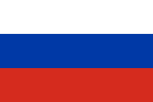
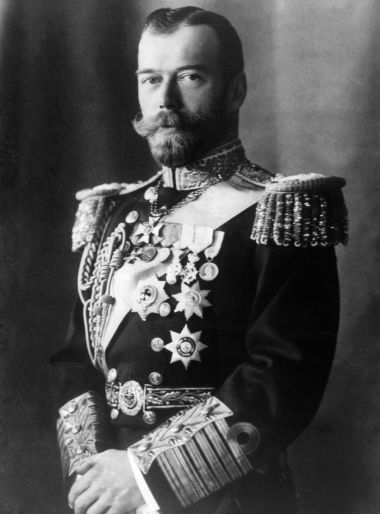
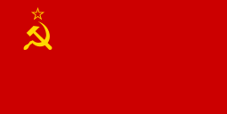

1 Introdução
A Federação da Rússia tem como capital a cidade de Moscou, o país conta com 144 milhões de habitantes aproximadamente, e se localiza em dois continentes: Europa e Ásia.
Figura 18 - Bandeira da Rússia
Fonte: WIKIPEDIA, 2023
2 O Czarismo
Os czares governavam com um poder absoluto e se consideravam os representantes diretos de Deus na Terra. Eles eram apoiados pela nobreza e pelo clero, e tinham o controle total do exército, da polícia e da administração pública. A maioria da população russa, no entanto, era composta por camponeses pobres que viviam em condições precárias e sem direitos políticos.
O czarismo também foi marcado por muitos problemas, como a corrupção, a repressão política, a censura e a falta de democracia. Além disso, a Rússia sofreu com a derrota na Guerra da Crimeia em 1856, que abalou a confiança no regime czarista e abriu caminho para a ascensão do movimento revolucionário.
Figura 19 - Czar Nicolau II
Fonte: Escola Kids - UOL, 2023
3 A URSS
A Rússia era governada por um czar sem uma constituição definida e a população enfrentava sérios problemas, como a fome. O principal partido que lutava pelos interesses sociais era o POSDER, que se dividiu em Bolcheviques (liderados por Lenin) e Mencheviques.
Em 1917, ocorreram manifestações que levaram o exército a se voltar contra o czar, levando-o a abdicar do trono. Com o vácuo no poder, Lênin retornou ao país com lemas como "Pão, Paz e Terra" e "Todo poder aos Sovietes". Os Bolcheviques invadiram o palácio do Kremlin em 25 de outubro de 1917, concretizando a Revolução Russa.
Assim que assumiu o poder, Lenin passou a ser o governante da URSS, o período foi caracterizado por avanços para a população, como a resolução da escassez de alimentos que assolava o país há décadas e a distribuição de terras para aqueles que não tinham onde cultivar seus próprios alimentos.
Um dos grandes marcos foi a retirada do país da Primeira Guerra, com o tratado de Brest Litovski. Lenin implementou a Nova Política Econômica (NEP) como uma maneira de revitalizar a economia russa, que incluiu a nacionalização da indústria e a luta contra a pobreza, a fome e a desigualdade social. A criação da União das Repúblicas Socialistas Soviéticas (URSS) também foi uma medida importante dentro dessa política.
Após o falecimento de Lenin, Joseph Stalin ascendeu ao poder no auge desenvolvimentista da nova política econômica. Stalin lançou no início de seu governo os “planos quinquenais“. Basicamente, os planos quinquenais ajudaram a URSS a alcançar um forte processo de industrialização, que deu sustentação para diversos avanços no campo da saúde, educação, ciência e tecnologia.
A URSS chegou ao fim em 1991, Durante esse período, a União Soviética foi governada por Nikita Khrushchev e Leonid Brezhnev. Khrushchev ficou famoso por planejar toda a produção agrícola soviética e por implementar políticas mais liberais. Enquanto isso, Brezhnev suprimiu várias reformas políticas e administrativas que Khrushchev havia implementado, causando um forte descontentamento interno e várias manifestações contrárias ao governo.
Os protestos generalizados em várias repúblicas da URSS levaram a demandas pela independência, culminando na declaração de independência da Ucrânia em 24 de agosto de 1991, que foi um "golpe final" para a URSS. A partir desse evento, várias outras repúblicas começaram a buscar sua independência em rápida sucessão.
Figura 20 - Bandeira da URSS
Fonte: Wikipedia 2023
3 Geopolítica Atual
A geopolítica russa atual é extensa, mas resumimos em alguns tópicos principais:
- Política externa: a política externa da Rússia é amplamente baseada em sua visão de seu papel como uma grande potência. Isso inclui a manutenção de relações próximas com países vizinhos, bem como a participação em organizações internacionais como a ONU.
- Relações com os Estados Unidos: as relações entre a Rússia e os Estados Unidos têm sido tensas desde o final da Guerra Fria. As questões mais importantes incluem a expansão da OTAN, a crise na Ucrânia e a interferência eleitoral russa nas eleições americanas.
- Ártico: A Rússia é um dos países que reivindicam a região do Ártico, que é rica em recursos naturais. A disputa por esta área tem o potencial de desestabilizar as relações internacionais no futuro.
- Guerra com a Ucrânia: A guerra entre a Rússia e a Ucrânia começou em 2014, quando a Rússia anexou a Crimeia, que anteriormente era uma república autônoma dentro da Ucrânia. Desde então, os conflitos têm se intensificado, especialmente na região leste da Ucrânia, onde separatistas pró-russos têm lutado contra o governo ucraniano. As causas do conflito são complexas e incluem diferenças culturais, étnicas, políticas e econômicas entre os dois países, bem como a influência de outras potências regionais e internacionais. A Rússia alega que está defendendo os direitos dos falantes de russo na Ucrânia e que a Ucrânia está violando os direitos humanos e o tratado de paz de Minsk de 2015.
Durante a Segunda Guerra Mundial, o governo Tai invadiu e anexou várias províncias no vale Mekong enquanto a França estava ocupada pelos nazistas. Os japoneses aliados com os Tai mediaram um acordo de paz com a França de Vichy, usando a crise como uma oportunidade para estabelecer sua presença no Sudeste Asiático.
Os grupos nacionalistas laosianos, vietnamitas e cambojanos continuaram a lutar, e em 1941, Ho Chi Minh retornou do exterior e formou a Liga para a Independência do Vietnã para lutar contra as autoridades coloniais francesas e os ocupantes japoneses.
Em 1945, o governo japonês tomou diretamente a Indochina das autoridades coloniais francesas, formando uma confederação de estados semi-independentes incorporados à sua Esfera de Co-Prosperidade da Grande Ásia Oriental. Embora o Vietnã tenha sido quebrado, o Camboja e Laos se tornaram estados independentes até o final da Segunda Guerra Mundial, quando foram novamente confiscados pelos franceses da monarquia tailandesa.
Figura 16 - Civis na Guerra do Laos contra a ocupação japonesa.

Fonte: A REFERÊNCIA, 2020
4 A GUERRA CIVIL LAOCIANA
A história da guerra do Laos, o país mais bombardeado da história, é ainda pouco difundida pela grande mídia por se tratar do triste resultado de guerras financiadas pelo imperialismo.
Em 1954, o Vietnã obteve uma histórica vitória em Dien Bien Phu contra os franceses, o que levou à independência do Vietnã, Camboja e Laos. Os Estados Unidos intervieram na região para evitar a expansão do socialismo, adotando a chamada "Teoria do Dominó".
Embora a guerra do Vietnã seja amplamente conhecida, o envolvimento dos EUA na Guerra Civil do Laos foi mantido em segredo, apelidado de "A guerra escondida". A CIA gastou US $ 500 milhões em treinamento e armou dezenas de milhares de Hmongs em nome do governo laosiano.
A Trilha Ho Chi Minh era uma rota crucial para o Exército do Vietnã do Norte enviar suprimentos e soldados, e os EUA lançaram várias campanhas de bombardeio contra ela. Entre 1964 e 1973, os EUA lançaram 580 mil bombas e deixaram cair 2 milhões de toneladas de bombas no Laos.
Isso teve um grande impacto no país, matando mais de 50 mil pessoas na Guerra Civil Laosiana e deixando mais de 20 mil mortas pisando em bombas que nunca explodiram.
O presidente dos EUA, Barack Obama, prometeu US $ 90 milhões para ajudar o Laos a desarmar as 80 milhões de bombas de fragmentação estimadas que nunca explodiram. Além disso, durante a Guerra Civil, a CIA traficou narcóticos opiáceos para apoiar as comunidades que estava armando para lutar contra os comunistas, particularmente os Hmongs. O cultivo de papoula em larga escala ainda é um problema na região, e a luta contra o tráfico de drogas continua sendo um grande desafio.
Figura 17 - Guerra civil no Laos

Fonte: MAPA NA MÃO, 2023